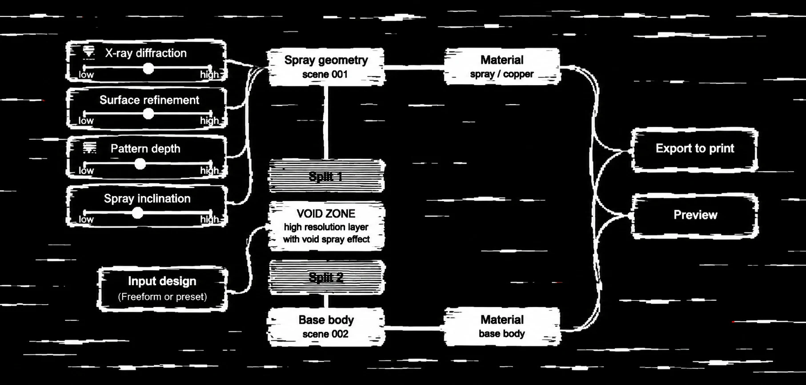

Computational design research, 2026, voxel printing
What happens when you intentionally leave?
And what happens when that logic of omission becomes a material operation, when layers are deliberately left empty inside a voxel print?
By introducing void layers, droplets spread before reaching the next surface, creating a diffuse, spray-like texture instead of a precise voxel pattern.
A series of prints were produced to isolate the void parameters influencing the spray-like effect.
Void height, pattern depth, and inclination were investigated as independent variables.
Material jetting builds objects voxel by voxel, layer by layer. Missing layers are normally considered defects.
Logic of omission uses the absence of printed layers to control material emission and create different surface effects. Four parameters were translated into an interactive diagram, where each slider adjusts the material distribution and spray-like effect of the corresponding print.

Print v10, rendered live from the four sliders